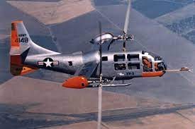

Expirimental aircraft are the ones that people always speculate about as they are always speculating about as they are the ones that we know the very least about, they are frequently the fastest and highest flying ever, but they also frequently lead to new aircraft that are based onn new concepts, case in point, the V-22 Osprey tilt-rotor aircraft was based on an expirimental prototype with the goal of combining the advantages of fixed-wing aircraft with that of helicopters. As all of these aircraft explore diffrent concepts its impossible to generalise much about them.